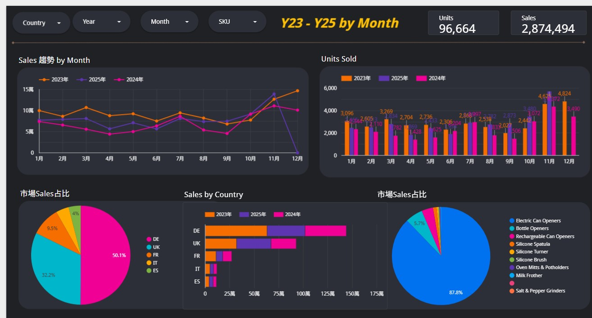

以結構與數據優化
跨國電商增長
我是阮暄雅 (XUANYA JUAN)，現主理 Amazon 績效優化，負責跨國站點營運策略、績效控管，和SOP推動與執行，並擁有 6 年專案管理基底。
我的核心價值在於：在複雜情境中進行結構優化。 結合 SEO 與 PPC 流量承接，透過 Python 與 AI 輔助開發工具建立自動化流程，從「純執行」提升至「數據洞察決策」。
- 亞馬遜營運與策略
- 數據 & AI 應用
- 視覺排版與剪輯
- 外語能力
核心技能 Core Competencies
亞馬遜營運與策略
熟悉亞馬遜整體營運，從流量結構、PPC、庫存與多站點策略整合優化
數據 & AI 應用
運用 Python 結合 AI 輔助開發整合數據，提升分析效率與決策品質
視覺排版與剪輯
對美感有要求，並具備設計與剪輯能力
外語能力
具備外語能力，能應對海外市場溝通營運
營收優化案例分享 Case Study
從高廣告依賴到健康流量結構
接手帳號初期面臨業績增長需求，但整體獲利被高額廣告費侵蝕的問題。高度仰賴付費流量，導致淨利稀釋。透過系統性的流量結構重塑與廣告優化，有效提升自然流量占比，改善整體獲利結構。
驅動銷售額成長
- 關鍵字策略重構與在地化 Listing 優化，強化核心關鍵字自然排名
- 依產品排名與市場定位，建立 SKU 分階段 PPC 投放策略，提升投放效率
- 優化 Listing 轉換率，有效承接自然流量，將流量穩定轉化為銷售
降低營運成本
- 重整廣告架構，依曝光／轉換／Brand Defense 分層管理，提升投放效率與資源配置
- 擴展高意圖精準詞，並排除低效與無關流量，強化投放品質
- 以 45–60 天可售天數作為健康庫存指標，結合 FC 與實際銷量，動態調整補貨節奏
結構化PPC策略 Structural PPC Framework
以消費者購物旅程為核心，拆解各階段數據表現。避免憑直覺出價，提升投放精準度與整體轉換效率。
SEO × PPC 整合策略
以數據拆解競品流量來源與搜尋量，將關鍵字劃分為核心大詞、轉換精準詞與情境補充詞，並對應前台 SEO 佈局、後台關鍵字設定與 PPC 投放策略，讓關鍵字從曝光、點擊到轉換都有一致的策略承接。
SKU 階段管理
根據產品 BSR 排名與市場定位，將 SKU 劃分為不同成長階段，並配置對應的預算權重與投放策略，確保資源集中於高潛力產品，避免平均分配造成效率稀釋。
風控與防禦機制
透過分層式廣告結構，強化核心關鍵字佔位與品牌詞防禦。 同步優化 Top of Search 投放比例，並持續清理高花費低轉換關鍵字，提升流量品質與整體投報效率。
日常營運流程 Daily Operations
依工作內容順序進行，比重依當日或當週重點彈性分配，確保營運表現維持在目標範圍內。
營運表現巡檢
每日 5-10 分鐘快速確認前一日營收、銷量、TACOS、BSR 排名與競品動態，追蹤 Days of Inventory 是否落在目標區間。
異常排查
聚焦 Account Health 與 Listing 異常，確認合規狀況、Buy Box %、變體與跟賣問題，立即排查修正降低銷售影響。
廣告調整優化
依產品階段設定策略（新品期提升曝光、成熟期聚焦轉換），日常維護包含關鍵字、否定詞、ASIN Targeting 與出價調整。
Listing / SEO / GEO 優化
將關鍵字分層佈局於 Title、Bullet Points、A+ 與 Backend Keywords，強化整體 SEO 結構。 同步進行圖文 A/B Test，確保屬性完整，提升轉換表現與平台演算法表現。
庫存與補貨管理
每週檢查庫存水位，以 45-60 天可售天數為健康區間。超過 180 天搭配促銷加速銷售，動態調整補貨預估。
數據分析與復盤
每週評估銷售核心數據，追蹤預估與實銷達成率。每月 P&L Review 檢視 ROI 與業績目標，動態校準營運策略。
促銷活動規劃
每月規劃未來 1-2 個月折扣，大促提前 2-3 月準備。搭配庫存、物流與海外倉配置，追蹤活動前後指標變化。
售後與品牌維護
定期彙整 VOC，分析負評與退貨原因。監控 "Frequently Returned" 標籤，排查問題並回饋產品迭代或文案優化。
價格與成本管理
新品上架前進行完整成本核算，確保定價具備健康利潤結構。 定期檢視 FBA 費用、匯率與關稅變動，動態調整售價，維持整體營收表現。
AI 應用與數據自動化 Automating Intelligence
不再耗費兩三個小時整理報表，把時間還給高價值的「決策分析」。
Python x Vibe Coding 應用
面對多站點、多變體與類別監控，人工整理資料又耗時。我主導引入 Python 與 AI 開發的追蹤系統：
- 追蹤 BSR 與競品資訊：追蹤 BSR 與競品動態，定期整理價格變動與 Review 表現，作為營運調整依據。
- Google Apps Script 警示：透過 Google Apps Script 建立監測機制，於異常降價或排名波動時即時提醒。
- 強化營運效率：優化報表流程，縮短資料整理時間，提升日常營運效率。

轉化軟實力：從專案管理到電商營運 Transferable Value
6 年藝文與國際展覽專案管理經驗，具備在多任務情境中維持穩定節奏與執行品質的能力，並能應用於電商營運場景。